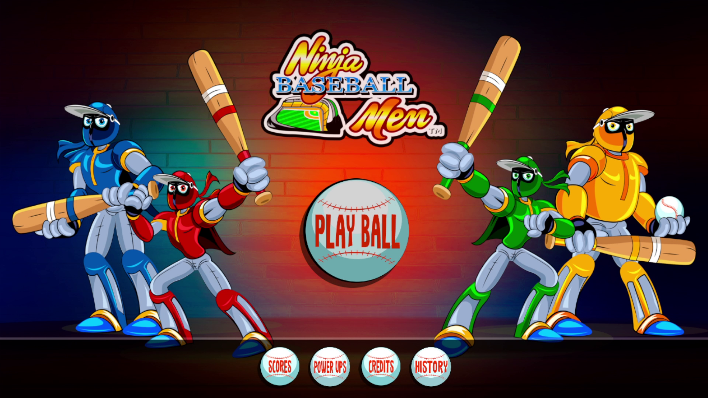
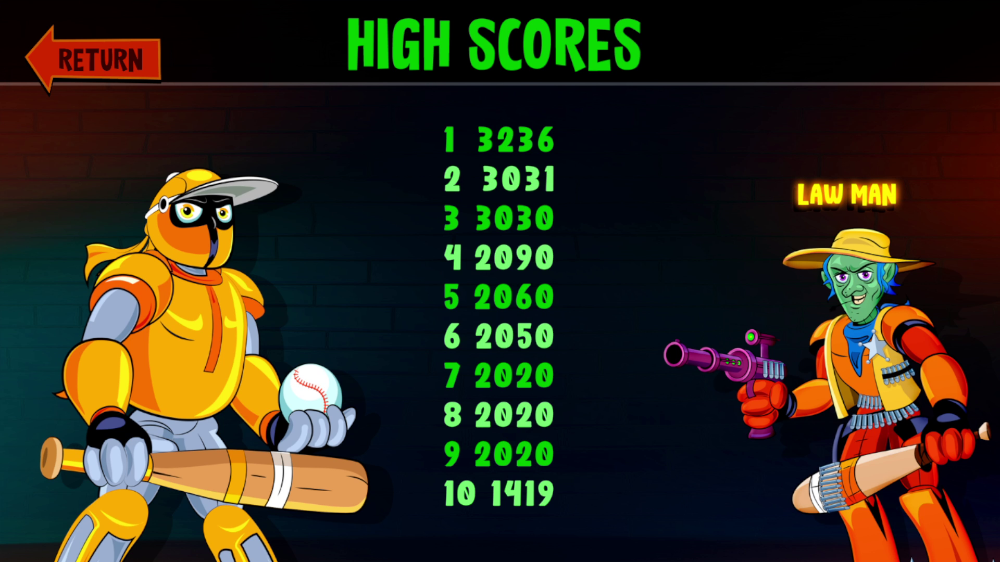
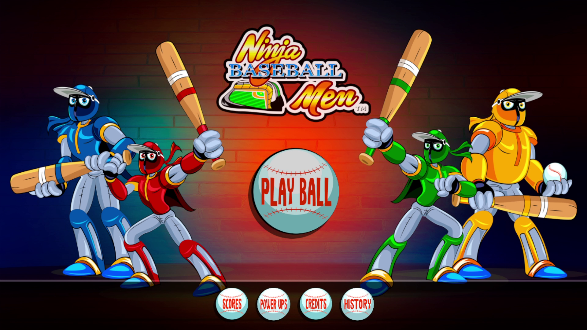
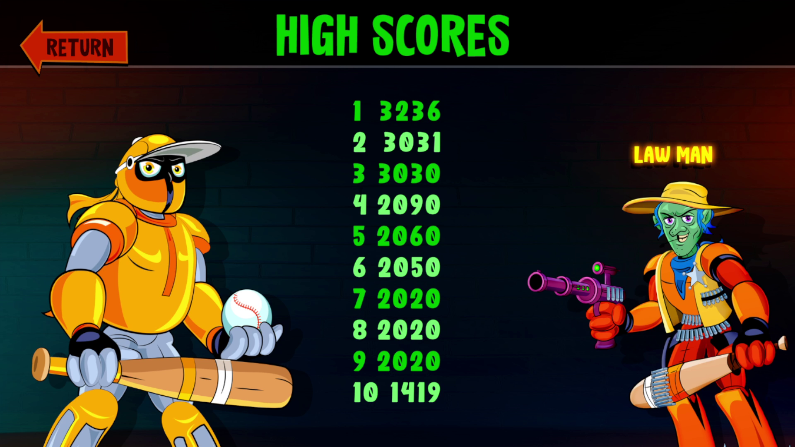
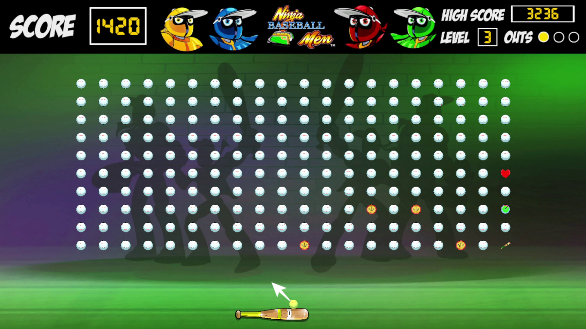
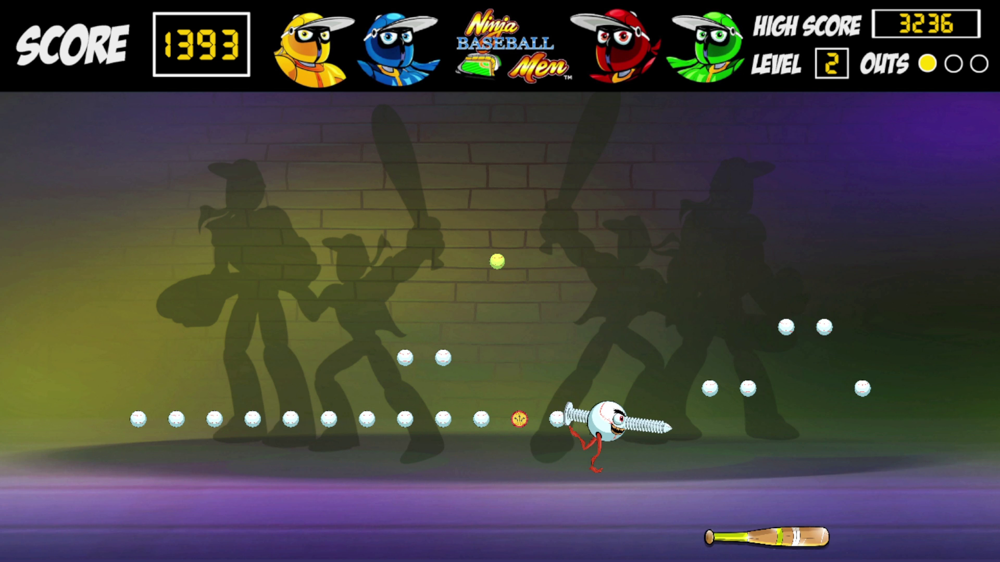
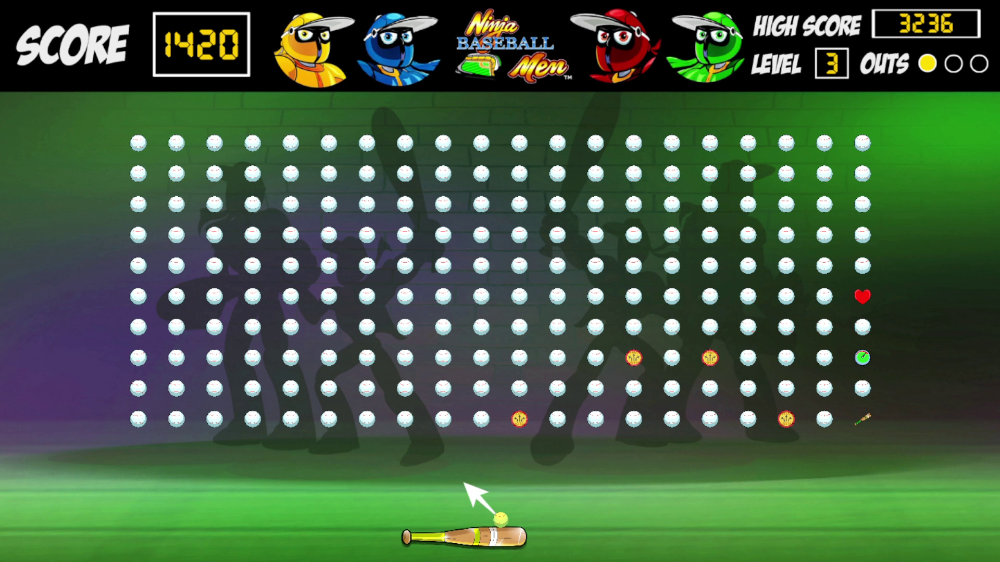
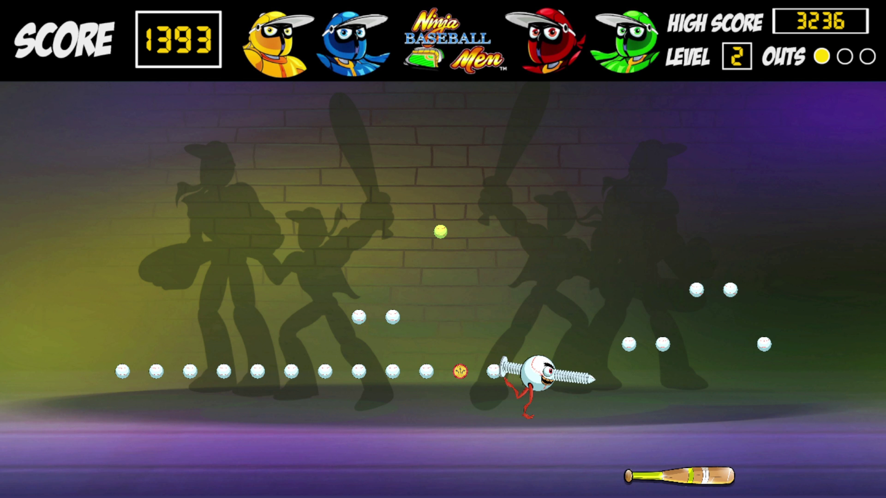

"Ninja Baseball Men" is a project I developed for a client in Unity.
The game is a revamp of a classic game called "Clean Sweep" with a visual style inspired by another
arcade game called "Ninja Baseball Bat Man".
This project presented a series of challenges that were quite fun to solve, such as ensuring that
the project worked on Windows using either a keyboard, mouse, or a gamepad, as well as on Android mobile devices.
Another challenge was to make the game levels as modular as possible. I implemented a visualization of the
ball grid in the editor and utilized the viewport space to ensure that the instantiation would work on any
screen resolution, which was particularly important for mobile devices.
The game was produced within a short time frame, and the process was highly iterative. I consistently sent
video updates and playable builds to the client, incorporating their feedback to improve the final product.
The code base was developed in a scalable manner, ensuring the longevity of the project even without my
involvement. The client can easily add new levels, special ball types, and other elements without needing
to modify any code.
While the client has given me permission to share videos and images of this project, I am unable to publicly
share the project's source code.
 



 



All copyrights reserved by Gonçalo Pinto 2025©